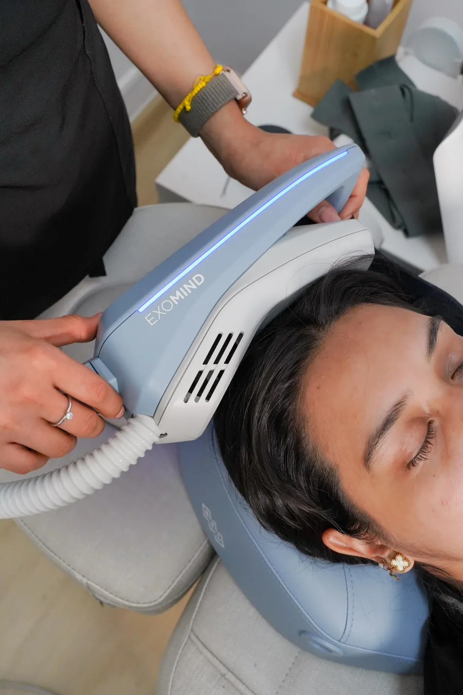

Bienestar & Longevidad
Medicina del bienestar y la longevidad: sueroterapia intravenosa, NAD+, hidrógeno molecular, medicina genómica y estimulación cerebral, integrados en programas que cuidan tu energía hoy y tu salud celular a largo plazo. Cada protocolo se diseña con valoración médica previa por la Dra. Melina Trujillo.
Por qué importa
La longevidad no es solo sumar años: es llegar a cada etapa con energía, claridad mental y un cuerpo que responde. Para la mujer, eso significa acompañar los cambios hormonales, el desgaste del día a día y el envejecimiento celular con herramientas que actúan desde adentro.
En MET Clinic combinamos sueroterapia intravenosa, terapia con hidrógeno molecular, medicina genómica y bienestar mental en programas personalizados y preventivos. Cada plan parte de un diagnóstico médico; nuestro objetivo es optimizar tu vitalidad de forma responsable, con expectativas claras sobre lo que cada terapia puede aportar.
Tratamientos
Infusiones de vitaminas, minerales, antioxidantes y aminoácidos administradas por vía intravenosa para una absorción directa. Diseñamos cada cóctel según tu objetivo —energía, defensas, recuperación o equilibrio— tras una valoración médica. Es un complemento del bienestar, no un sustituto de una alimentación y hábitos saludables.
Personalizado · Paquetes de 4 sesionesTecnología de epigenética que, a partir de una muestra de cabello, evalúa cómo tu estilo de vida, nutrición y entorno influyen en la expresión de tus genes. No es una prueba genética ni un diagnóstico: genera un reporte personalizado que orienta planes de nutrición, hábitos y suplementación para optimizar tu bienestar celular.
Reporte epigenético · No diagnósticoTerapia con hidrógeno molecular (H₂) por inhalación, vía tópica o agua hidrogenada. El hidrógeno actúa como antioxidante selectivo y se asocia con menor estrés oxidativo y mayor sensación de bienestar. La evidencia es emergente: lo ofrecemos como apoyo complementario, con expectativas realistas y acompañamiento médico.
Complementario · Paquetes de 10 sesionesCuidar la longevidad también es cuidar la mente y la recuperación del cuerpo. BTL Exomind utiliza estimulación magnética transcraneal sobre las áreas asociadas a la regulación emocional, como apoyo al bienestar mental, el enfoque y el descanso. La terapia enzimática emplea enzimas para favorecer procesos antiinflamatorios y de recuperación.
No invasivo · Bajo valoración médica
Preguntas frecuentes
Sí. Cada protocolo se diseña tras una valoración médica de la Dra. Melina Trujillo, con expectativas claras sobre lo que cada terapia puede aportar.
No. Es un complemento del bienestar, no un sustituto de una alimentación y hábitos saludables. Cada cóctel se diseña según tu objetivo: energía, defensas, recuperación o equilibrio.
Los cócteles de sueroterapia se ofrecen en paquetes de 4 sesiones. La cantidad adecuada se define en tu valoración.
Por Doctoralia o por WhatsApp al 55 4009 9923. La clínica está en Guty Cárdenas 65, Col. Guadalupe Inn, Álvaro Obregón, CDMX.
Agenda con la Dra. Melina Trujillo y diseñemos un programa de bienestar a la medida de tu cuerpo, tu ritmo y tus metas.